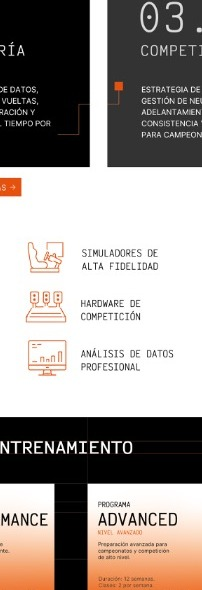
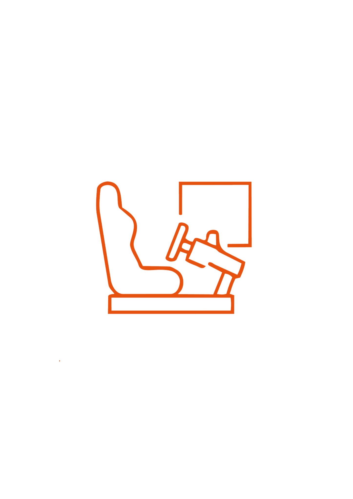
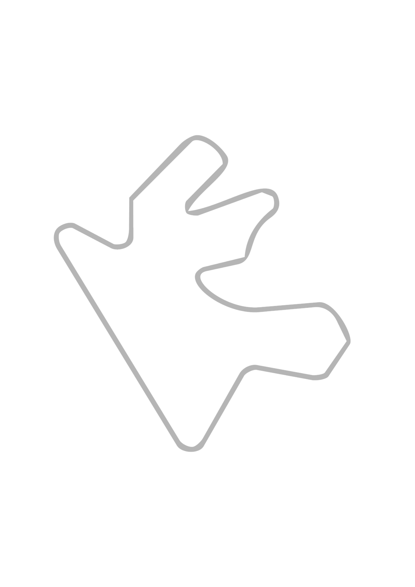
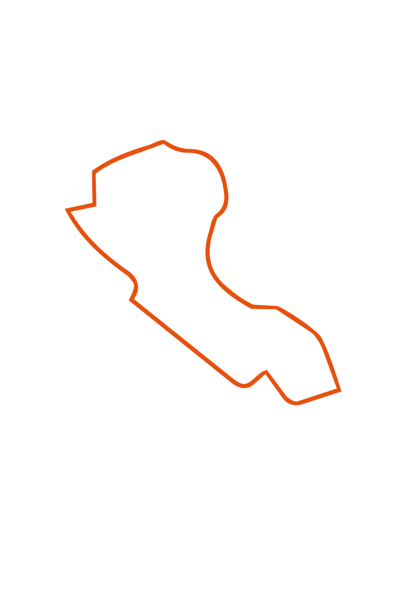
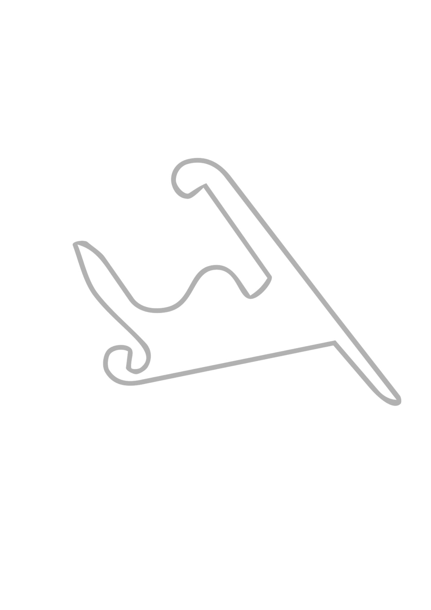

INICIACIÓN
Fundamentos de conducción, configuración del simulador, trazadas ideales y primeros análisis de rendimiento.
La simulación ya no es un juego. Formamos pilotos virtuales mediante telemetría, análisis de datos y entrenamiento competitivo para llevar su rendimiento al siguiente nivel.
VER PROGRAMASEn 2026 la diferencia entre el automovilismo virtual y el real es cada vez más pequeña. Equipos profesionales utilizan simuladores para entrenar pilotos, desarrollar estrategias y analizar datos.
Apex nace para formar profesionales capaces de interpretar telemetría, optimizar cada vuelta y transformar información en rendimiento.

Fundamentos de conducción, configuración del simulador, trazadas ideales y primeros análisis de rendimiento.
Interpretación de datos, comparación de vueltas, frenadas, aceleración y optimización del tiempo por sector.
Estrategia de carrera, gestión de neumáticos, adelantamientos, consistencia y preparación para campeonatos.
Contamos con simuladores de última generación, equipamientos de alto rendimiento y software profesional para ofrecerte la experiencia más realista y precisa.

SIMULADORES DE
ALTA FIDELIDAD
HARDWARE DE
COMPETICIÓN
ANÁLISIS DE DATOS
PROFESIONAL
Ideal para quienes quieren dar sus primeros pasos en la simulación competitiva.
Duración: 4 semanas.
Clases: 1 por semana.
Enfoque: fundamentos + consistencia.
Orientado al análisis de datos y mejora constante.
Duración: 8 semanas.
Clases: 1 por semana.
Enfoque: telemetría + optimización.
Preparación avanzada para campeonatos y competición de alto nivel.
Duración: 12 semanas.
Clases: 2 por semana.
Enfoque: competición + estrategia.

Un circuito de alta velocidad donde la confianza y el control en curvas rápidas son fundamentales.
VER MÁS →
Circuito técnico y desafiante donde la precisión y la constancia marcan la diferencia vuelta a vuelta.
VER MÁS →
Conocido como el templo de la velocidad, premia las frenadas precisas y el máximo rendimiento en recta.
VER MÁS →